Prospective College Student | Audio Engineering
Hi! My name is Jonathan Sluka, and I am a senior at Plum Senior High School, located in the suburbs of Pittsburgh. I am looking to major in music technology in college. I have a passion for combining my creative skills with my technical skills.
Music is something I have been passionate about for many years. I started playing guitar in 2021, and since then I have picked up numerous other instruments and learned to play some of my favorite songs, and I have even written a few songs of my own. My favorite music artists include the Ramones, Kicked in the Head by a Horse, the Descendents, Minor Threat, My Chemical Romance, Bad Brains, Backdrop Cinderella, Nirvana, and Casiopea.
Outside of music, I am active in sports. I have played dek hockey since I was 10 years old, I played ice hockey for two years, and I have been learning to skateboard as well. Additionally, I enjoy drawing and playing videogames. I also have a strong interest in cars, with my favorite being the second-generation Mazda RX-7.
Below is a link to my Spotify profile, where you can see my diverse music taste.
Here, you can find some recordings of me playing songs as part of audition requirements for other universities. I had a great time recording and mixing them!
This song has been a recent favorite of mine and is more in line with what I usually listen to every day. I got started playing guitar because of punk rock bands, so I felt it only fitting that I include an offshoot of punk rock in my portfolio somewhere. I would describe this song as a combination of screamo and Midwest emo. I love that bands like Oakwood are proving the common misconception that punk rock and its many subgenres are "simple" to be false. The use of a non-conventional tuning is also very interesting, and adds to the song's complexity. I am very proud of my recording of this song, and I hope that you can find the same beauty in this song that I do.
Another favorite of mine, this song is by highly influential Japanese jazz fusion band Casiopea. I have always had a great deal of interest in foreign music, specifically Japanese music. Through this interest, I found Casiopea and quickly fell in love with their ability to combine jazz and rock in such a tasteful way. This particular track is a favorite of mine, and I hope that if you did not know of this band before you saw this that you might consider checking them out!
For this last song, I wanted to truly push myself. I feel that it embodies everything that a guitar player should be able to do. It begins with a calm, melancholic riff before launching into my favorite part of the song, a catchy secondary riff. This carries on until the chorus, where chords come into play and the intensity builds. After the second chorus, the song ends with a blistering solo. The solo of this song pushed me far outside of my comfort zone, and I feel more accomplished for getting through it. It goes to show that hard work does pay off.
I try to take elements from all genres of music when I write my own music, with some being obvious and others being not-so obvious. Bands that have a strong influence on my writing include the Ramones, the Descendents, and Nirvana. To me, they are masters of creating music that is both raw and uncompromising while also being melodic and catchy. I plan to write and record lyrics for these songs and publish them on Bandcamp and Spotify within the coming months.
This was the first song I wrote. My choice of using all barre chords was courtesy of the Ramones, and the bends were an idea that came while listening to "Neat Neat Neat" by The Damned. Although I have written a great number of songs since, I find that this one is one I consistently come back to and I am very proud of it despite its lack of complexity. What it may lack in finesse, it makes up for with raw power and emotion.
Here is a list of the gear I use to create and record music:
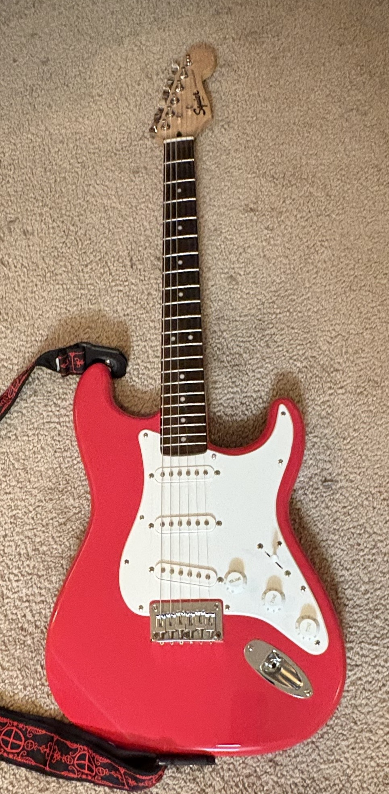
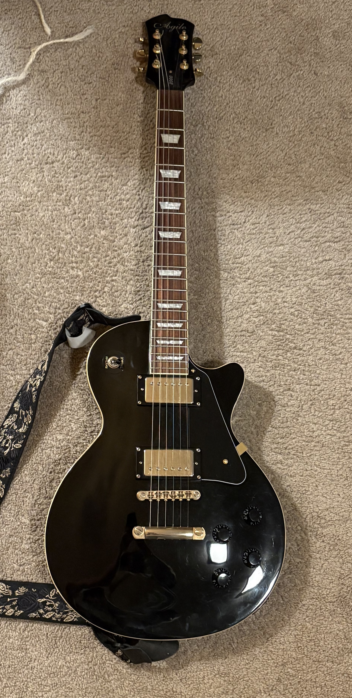
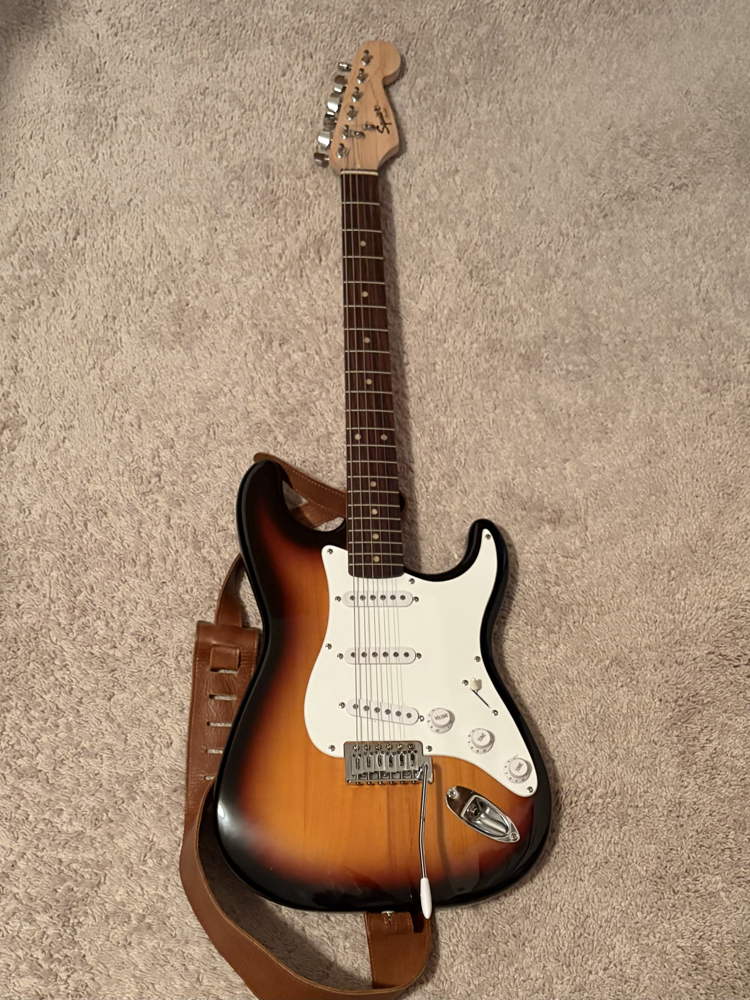
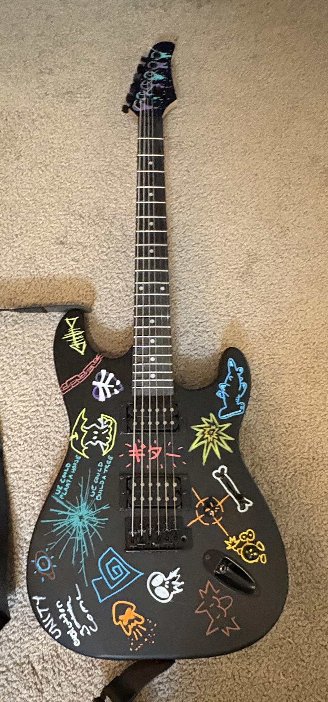
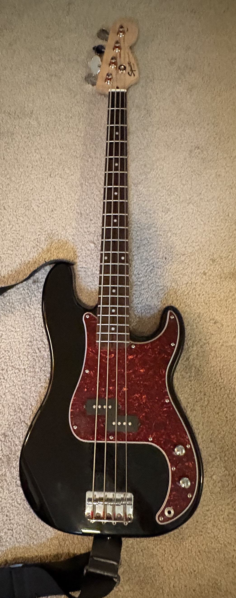
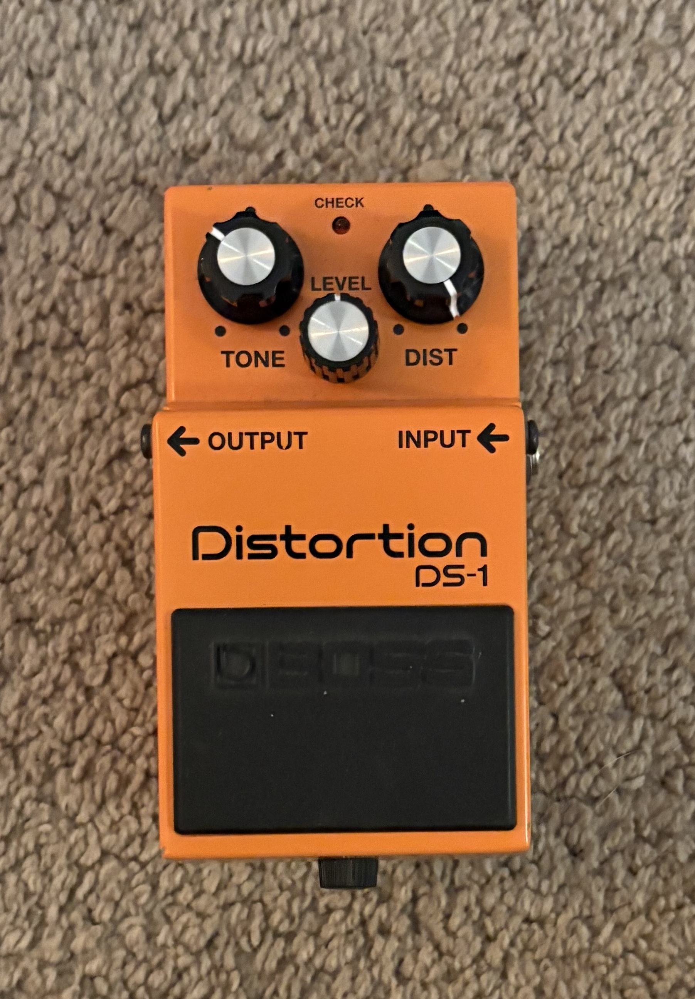
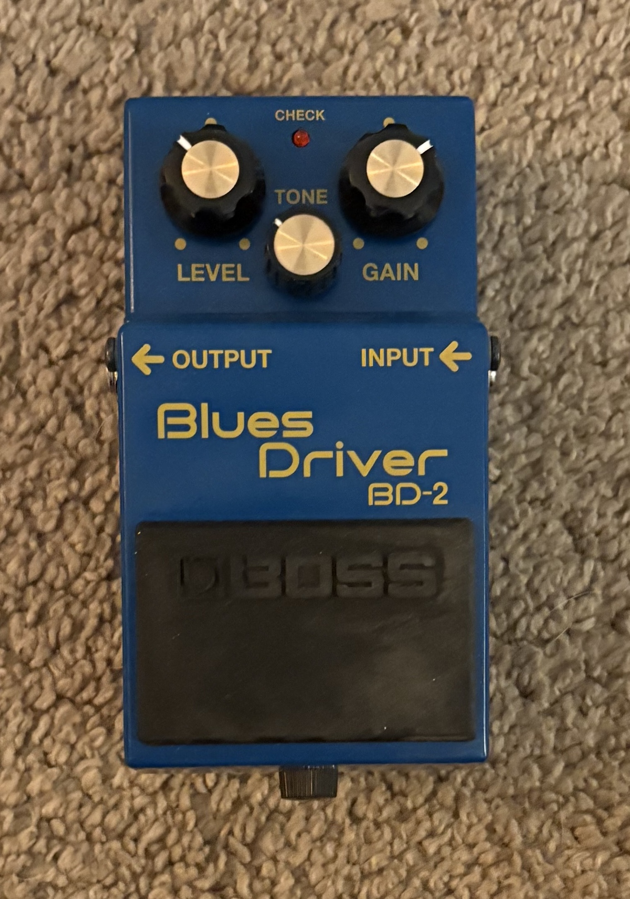
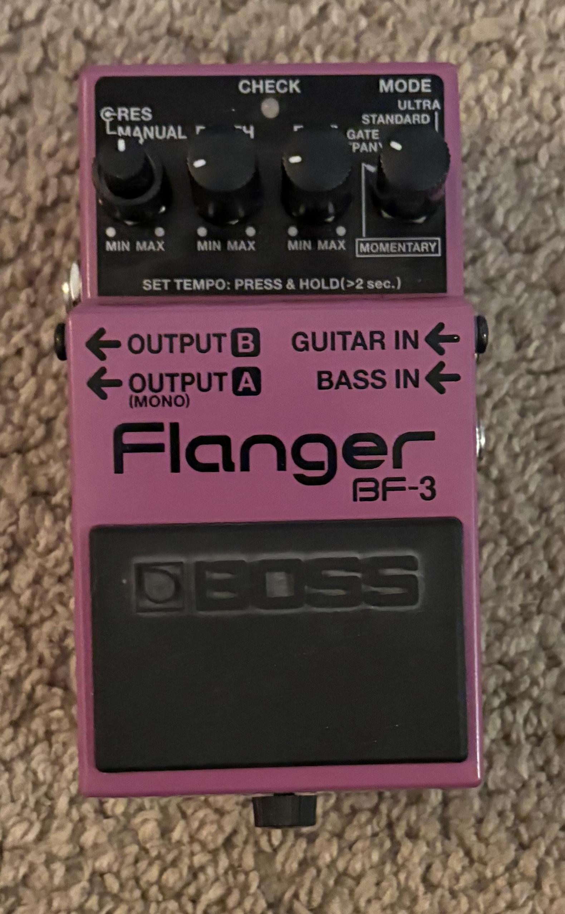
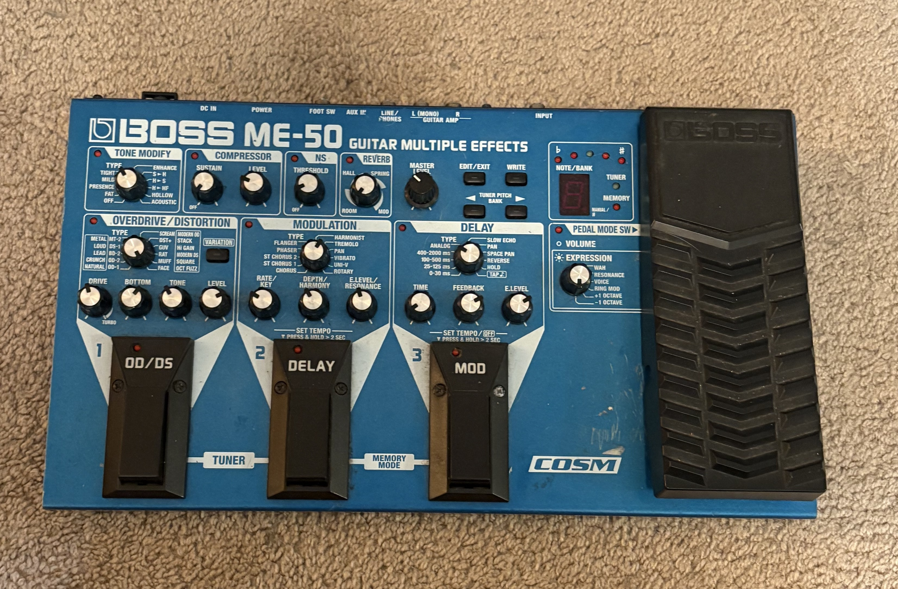
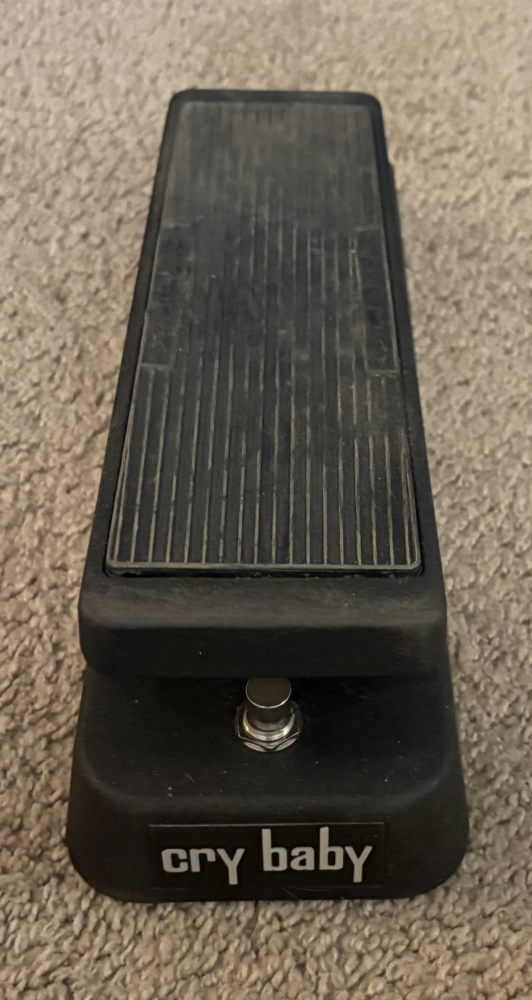
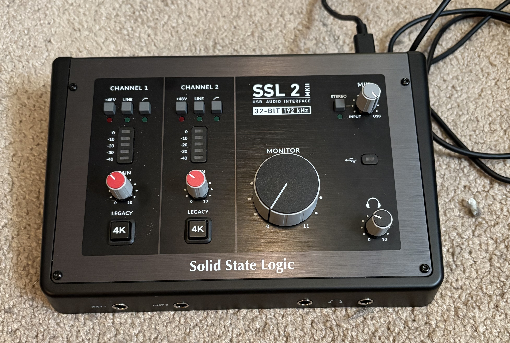
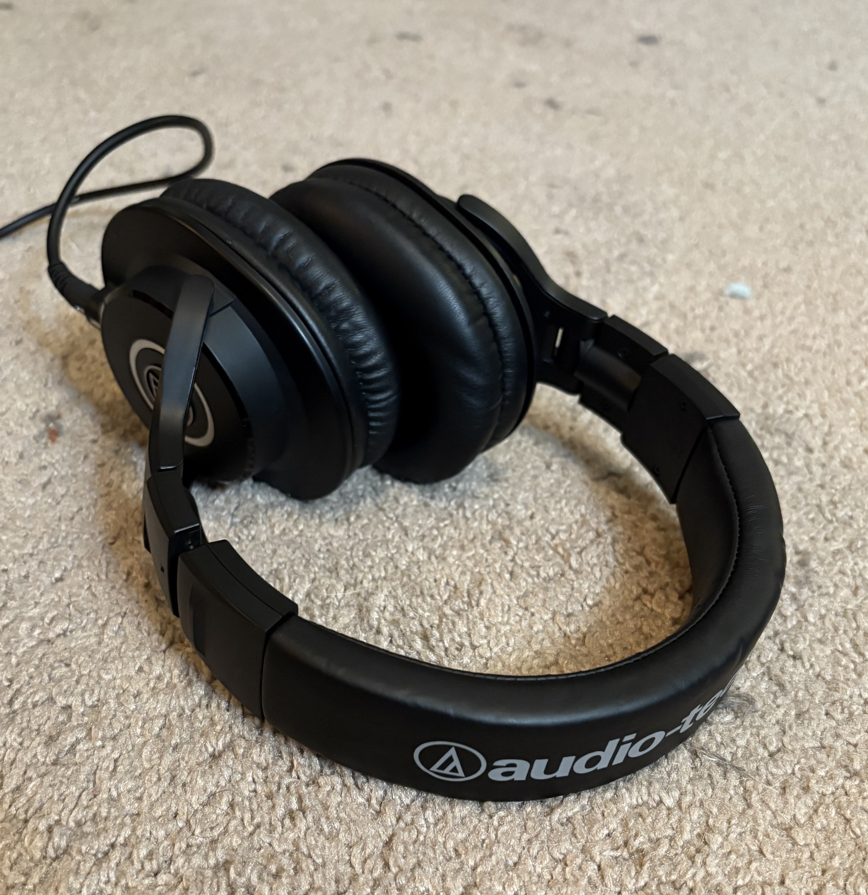
Here are some ways you can contact me.